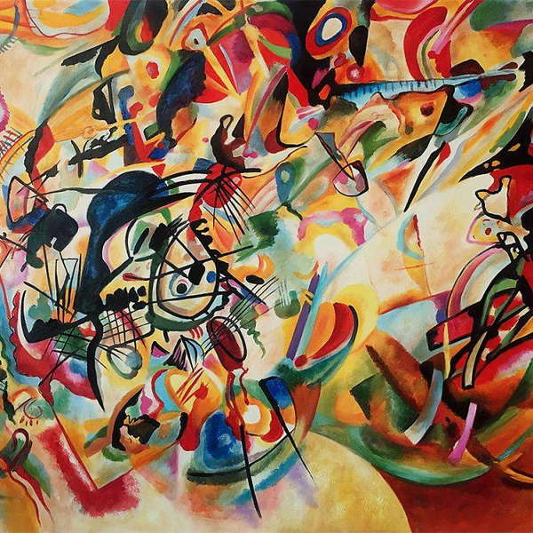

Василий Кандинский
Композиция VI
Полотна Кандинского выставляются в лучших музеях мира и Эрмитаж не исключение.
На родине, особенно подчеркивают важность работы художника для всего модернизма. Его творчеству посвящен целый
зал главного государственного музея.
«Композиция VI» – эталон русского авангарда. Картина отмечена яркими красками и сумбурностью образов. Искусствоведы
считают, что сочные размашистые мазки отражают кипучесть жизни начала XX в., которая была наполнена знаковыми
событиями и революционными переменами в промышленности.